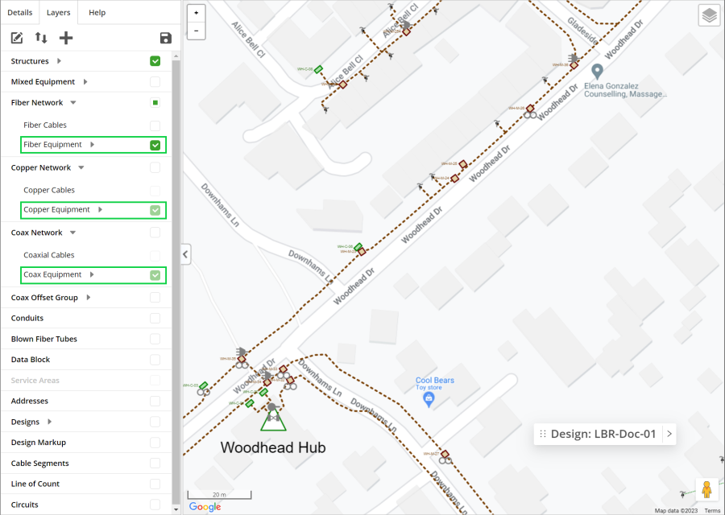

To have equipment displayed on the map, one or more equipment layers need to be configured in the database of your application. Your Administrator will usually take care of this task.
By checking the box of the layer(s) in the Layers tab, the equipment items of the layer become visible on the map. These layers provide a visual aid that allows you to quickly see which structures contain equipment.
Since Network Manager basically supports networks that can be based on either fiber, copper or coax technology, a separate section is provided by default in the Layers tab for each, containing a subsection for cables and one for equipment. You can check or uncheck the checkbox for both these subsections separately.

Figure: Displaying equipment